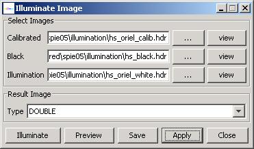

The class IlluminateImage provides a tool for re-illuminating any reflectance image with a white image acquired under a specific illumination.
Description:
This class was developed to generate images under multiple illuminations from a reflectance image. The class was
originally designed for operating on hyperspectral images and predicting hyperspectral appearance of scenes
under fluorescent light (indoor ceiling light), Oriel Xenon lamp (flat power spectrum in the visible spectral range),
and incandescent light (regular desktop lamp).
The dialog for image re-illumination is shown below.

First, the calibrated reflectance image, the black image (e.g., acquired with lens cap on) and the illumination
images are selected using the file choosers invoked by clicking on the button "...".
The images can be previewed using the adjacent buttons
labeled as "View". The re-illumination formula is the reverse formula of the calibration equation (see Image Calibration tool).
After clicking the button "Illuminate", the following formula is applied:
re-illuminated pix[i, j] = calibrated pix[i,j]*( illumination pix[i,j] - black pix[i,j]) + black pix[i,j]